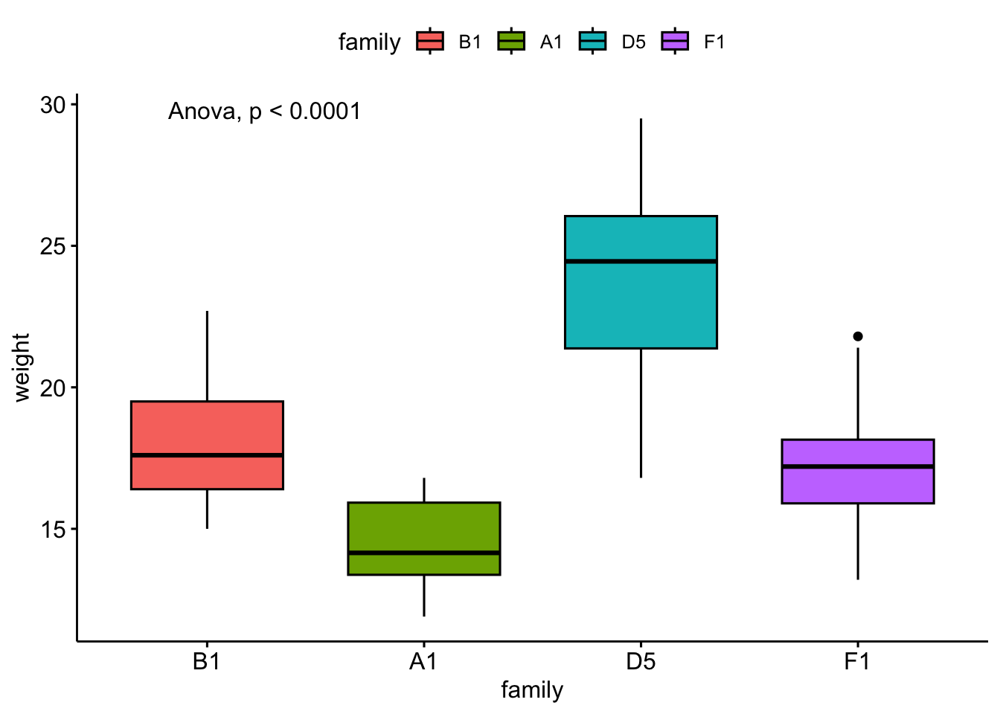

# we are reading the data directly from the internet
biochem <- read_tsv("http://mtweb.cs.ucl.ac.uk/HSMICE/PHENOTYPES/Biochemistry.txt", show_col_types = FALSE) |>
janitor::clean_names()
# simplify names a bit more
colnames(biochem) <- gsub(pattern = "biochem_", replacement = "", colnames(biochem))
# we are going to simplify this a bit and only keep some columns
keep <- colnames(biochem)[c(1,6,9,14,15,24:28)]
biochem <- biochem[,keep]
# get weights for each individual mouse
# careful: did not come with column names
weight <- read_tsv("http://mtweb.cs.ucl.ac.uk/HSMICE/PHENOTYPES/weight", col_names = F, show_col_types = FALSE)
# add column names
colnames(weight) <- c("subject_name","weight")
# add weight to biochem table and get rid of NAs
# rename gender to sex
b <- inner_join(biochem, weight, by="subject_name") |>
na.omit() |>
rename(sex=gender)Stats Bootcamp - class 12
Hypothesis testing
Two changes
- We are going to use
ggpubrrather thanggplot2- Don’t tell Jay ;)
- It has great visualization for the stats on the plots.
- Different syntax!!
- must use double quotes around “variable names”
- Due to reviewer #3, we will pivot to a more “physiologically relevant” data set
biochemthat consists of mouse measurements.
. . .
Prepare mouse biochem data
Compare mean of a variable to a known value
\(y\) is independent of \(x\)
\(y\) is continuous
\(x\) is constant
Parametric: One-sample t-test
t_test(y ~ 1, mu = x)
Nonparametric: Wilcoxon signed-rank
wilcox_test(y ~ 1, mu = x)
- Examine and specify the variable(s)
- Declare null hypothesis \(\mathcal{H}_0\)
- Calculate test-statistic, exact p-value
Think did the expression of my gene change…
1. Examine and specify the variable(s)
Let’s explore mouse \(weight\)
ggdensity(
data = b,
x = "??",
add = "mean",
rug = TRUE
). . .
let’s see some summary stats
b |>
get_summary_stats(
??,
type = "common",
show = c("mean","median","sd")
)Is it normally distributed?
ggqqplot(
data = b,
x = "??"
)Looks reasonable
. . .
b |>
??_test(weight)Yikes!
No easy answers…gotta make a call. We’ll try both.
2. Declare null hypothesis \(\mathcal{H}_0\)
Since this is a one-way test, we don’t need to worry if the groups have equal variance (only 1 group). But, we need a standard to compare against. I asked google, how much does a mouse weigh in grams?
Answer: 20-35 g, I’m going with \(27.5 g\) as our standard.
\(\mathcal{H}_0\) is that the mean of mouse \(weight\) can be explained by \(27.5\)
\(weight\) is the response variable
\(27.5\) is the explanatory variable
3. Calculate test-statistic, exact p-value
Nonparametric test:
x <- 27.5 # standard from google
b |>
??_test(weight ~ 1, mu = ??) |>
gt(). . .
Parametric test:
x <- 27.5 # standard from google
b |>
??_test(weight ~ 1, mu = ??) |>
gt(). . .
P values are well below 0.05
\(\mathcal{H}_0\) is that the mean of mouse \(weight\) can be explained by \(27.5\) is NOT WELL SUPPORTED
So \(27.5 g\) not able to describe weight
Not surprising since our mean mouse weight is 20.2. Don’t believe everything you read on the internet.
Compare mean of two groups
\(y\) is independent of \(x\)
\(y\) is continuous
\(x\) is categorical with 2 groups (factor w/2 levels)
Parametric: Student’s t-test
t_test(y ~ x) more here
need to pay attention to: var.equal paired
Nonparametric: Wilcoxon signed-rank
wilcox_test(y ~ x) more here
need to pay attention to: paired
- Examine and specify the variable(s)
- Declare null hypothesis \(\mathcal{H}_0\)
- Calculate test-statistic, exact p-value
Tangent on Student’s t-test
The T-Distribution, also known as Student’s t-distribution, gets its name from William Sealy Gosset who first published it in English in 1908 in the scientific journal Biometrika using his pseudonym “Student” because his employer preferred staff to use pen names when publishing scientific papers instead of their real name, so he used the name “Student” to hide his identity.
Guinness Brewery in Dublin


1. Examine and specify the variable(s)
We will compare mouse \(weight\) by \(sex\).
\(weight\) is the response variable
\(sex\) is the explanatory variable
\(y\) ~ \(x\)
\(weight\) ~ \(sex\)
ggdensity(
data = b,
color = "sex",
x = "weight",
add = "mean",
rug = TRUE
)I want the response variable on the \(y\) axis and the explanatory variable on the \(x\) axis.
Violin plot
ggviolin(
data = b,
y = "??",
x = "??",
fill = "??",
add = "mean_sd"
). . .
b |>
group_by(??) |>
get_summary_stats(
??,
type = "common",
show = c("mean","median","sd")
)Is it normally distributed?
ggqqplot(
data = b,
x = "??",
color = "??"
). . .
b |>
group_by(sex) |>
??_test(weight) |>
gt()Looks reasonable
Equal variance?
b |>
??_test(weight~sex) |>
gt()OK - so we can use t-test, but variance is not equal.
2. Declare null hypothesis \(\mathcal{H}_0\)
\(\mathcal{H}_0\) is that \(sex\) cannot explain \(weight\)
3. Calculate test-statistic, exact p-value
Nonparametric test:
b |>
??_test(?? ~ ??, ref.group = "F") |>
gt(). . .
Parametric test:
x <- 27.5 # standard from google
b |>
??_test(weight ~ sex,
var.equal = ??,
ref.group = "F") |>
gt(). . .
P values are well below 0.05
\(\mathcal{H}_0\) is that \(sex\) cannot explain \(weight\) is NOT WELL SUPPORTED
\(sex\) can explain \(weight\)
Visualize the result
# save statistical test result
statres <- b |>
t_test(weight ~ sex,
var.equal = F,
ref.group = "F")
ggviolin(
data = b,
y = "weight",
x = "sex",
fill = "sex",
add = "mean_sd"
) +
stat_pvalue_manual(
??,
label = "p",
y.position = 34
) +
ylim(10,35)Compare means of three or more groups
\(y\) is independent of \(x\)
\(y\) is continuous
\(x\) is 2 or more groups of categorical data
Parametric: ANOVA
anova_test(y ~ group) more info
Nonparametric: Kruskal-Wallis test
kruskal_test(y ~ group) more info
- Examine and specify the variable(s)
- Declare null hypothesis \(\mathcal{H}_0\)
- Calculate test-statistic, exact p-value
1. Examine and specify the variable(s)
We will compare mouse \(weight\) by \(family\).
\(weight\) is the response variable
\(family\) is the explanatory variable
\(y\) ~ \(x\)
\(weight\) ~ \(family\)
# i have pre-selected some families to compare
myfams <- c("B1.5:E1.4(4) B1.5:A1.4(5)",
"F1.3:A1.2(3) F1.3:E2.2(3)",
"A1.3:D1.2(3) A1.3:H1.2(3)",
"D5.4:G2.3(4) D5.4:C4.3(4)")
# only keep the familys in myfams
bfam <- b |>
filter(family %in% myfams) |>
droplevels()
# simplify family names and make factor
bfam$family <- gsub(pattern = "\\..*", replacement = "", x = bfam$family) |>
as.factor()
# make B1 the reference (most similar to overall mean)
bfam$family <- relevel(x = bfam$family, ref ="B1")Visualize the variable(s)
I want the response variable on the \(y\) axis and the explanatory variable on the \(x\) axis.
Boxplot
ggboxplot(
data = bfam,
y = "??",
x = "??",
fill = "??"
). . .
bfam |>
group_by(??) |>
get_summary_stats(
??,
type = "common",
show = c("mean","median","sd")
)Is it normally distributed?
ggqqplot(
data = bfam,
x = "weight",
color = "??"
). . .
bfam |>
group_by(family) |>
??_test(weight) |>
gt()Looks reasonable
Equal variance?
bfam |>
??_test(??~??) |>
gt()OK - so we can use anova!
2. Declare null hypothesis \(\mathcal{H}_0\)
\(\mathcal{H}_0\) is that \(family\) cannot explain \(weight\)
3. Calculate test-statistic, exact p-value
Parametric test:
bfam |>
??_test(weight ~ ??) |>
gt(). . .
Nonparametric test:
bfam |>
??_test(weight ~ family) |>
gt(). . .
P values are well below 0.05
\(\mathcal{H}_0\) is that \(family\) cannot explain \(weight\) is NOT WELL SUPPORTED
\(family\) can explain \(weight\)
Visualize the result
# save statistical test result
statres <- bfam |>
anova_test(weight ~ sex)
ggboxplot(
data = bfam,
y = "weight",
x = "family",
fill = "family"
) +
stat_anova_test()
Multiple pairwise comparisons
Quick aside
# save statistical test result
pairwise <- bfam |>
t_test(weight ~ family, ref.group = "??")
ggboxplot(bfam,
x = "family",
y = "weight",
fill = "weight",
) +
stat_pvalue_manual(
pairwise,
label = "p.adj",
y.position = c(30, 32, 34)
) +
ylim(10,38)Notice that not all pairwise differences are significant, yet the ANOVA is significant.
Appropriate statistical test cheatsheet

References
StatQuest: P Values, clearly explained